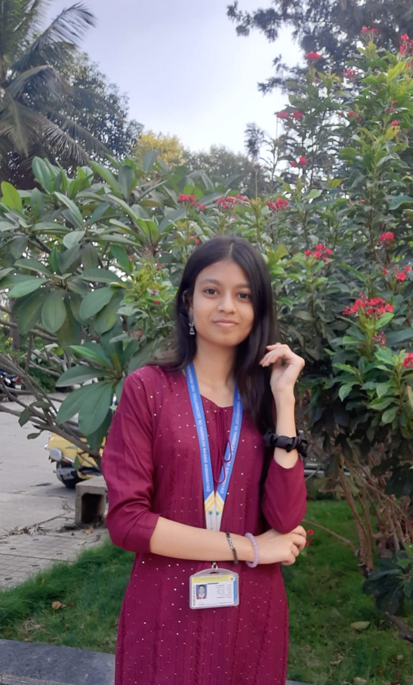

Bio-data
Name: Prerana A J
College: DSATM
Course: 3rd Year BE Student in CSE
Email: preranaaj@gmail.com
Phone: +91 6364144505
Blood Group: O+ve
Skills
- C Programming
- Web Development
- Communication
Projects
- Typing Speed Calculator: A web application that measures and improves typing speed by providing real-time feedback and practice exercises.
- Prix: A project that helps users hand out print details in advance to the print service, useful in time management for both users and printing services.
- GoFarm: A database management project that helps farmers upload their crop yields online for buyers to purchase. It also involves feedback mechanisms to improve the buying and selling process.
- Diet Recommendation System: A machine learning project that provides personalized diet recommendations based on user health metrics like height, weight, and age. It uses K-means and random forest clustering to produce accurate decisions.
Achievements
- Completed certifications in Python and Web Development.
- Achieved first place three times in competitive math quizzes, demonstrating strong analytical and problem-solving skills.
- 2nd Place in Math Debate: Earned second place in a math-themed debate, showcasing the ability to articulate complex mathematical concepts and think critically.
- Participated in Science Forum: Exhibited one of the projects at the forum, contributing to the scientific community.
- Aggregate Score: A CGPA of 9+ in first year, reflecting consistent academic excellence.
Education
- 12th Grade: Jindal PU College - 94%
- Current CGPA: 9.1 (Pursuing BE in Computer Science and Engineering at DSATM)